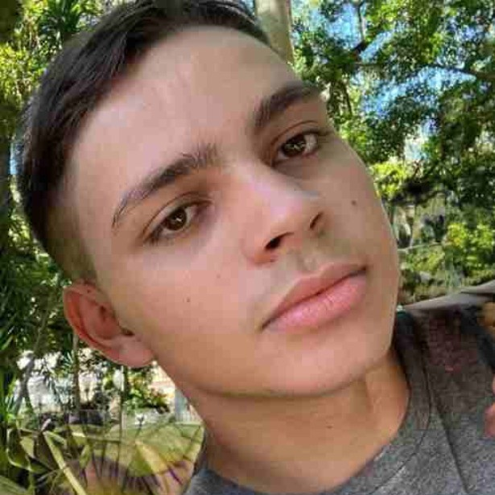
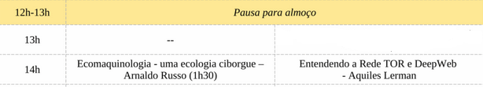

Bacharelado em Sistemas de Informação no Departamento de Informática e Estátistica, no centro técnólogico da Universidade Federal de Santa Catarina (INE-UFSC).
No momento, estou trabalhando como Desenvolvedor Full Stack na Companhia de Gás de Santa Catarina (SCGÁS). Onde ajudo meu time a deployar aplicações, alterar sites da instituição e onde lancei meu aplicativo de ramo comercial, o Rota GNV. A SCGÁS é uma das maiores empresas de gás do Brasil.
No momento uso o Debian Linux como S.O pessoal, mas profissionalmente uso Windows 11 e Windows Server 2012. Eu atualmente trabalho com TypeScript/JavaScript, Node.js e Visual Basic (Já li e refatorei muito código .vb legado), mas também já trabalhei com PHP, C#, Python e Lua. Como a maioria dos desenvolvedores, eu já programei em CSS e HTML, as principais stacks que utilizei no Front-End foram Bootstrap, React e Angular. Também já utilizei ferramentar como Docker, Git, BitBucker, GitLab, AWS, Google Cloud, GCP e VirtualBox. Mas o que realmente importa não é o que um programador conhece, e sim sua habilidade de aprender.
Você pode encontrar meu Linkedin aqui: https://www.linkedin.com/in/aquillesf/
Um aplicativo que ajuda motoristas que abastecem com GNV a encontrar os postos de gasolina mais próximos, com uma comunidade que ajuda a registrar os preços nos postos de gasolina.
Website feito para ajudar estudantes de graduação e mestrado a escolher as melhores matérias na Universidade Federal de Santa Catarina. Os estudantes também podem dar notas e comentários para seus professores, ajudando a comunidade
Scrapper feito com BeautifulSoup em Python 2.18, ele loga no CAGR da UFSC via sessão Cookies e pega todos os campûs, matérias e professores existentes da UFSC, Carrega em um arquivo XML que é transformado em JSON.

Se você quiser saber mais, veja meu currículo ou acesse meu Linkedin.